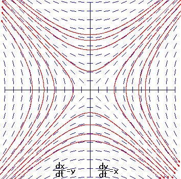
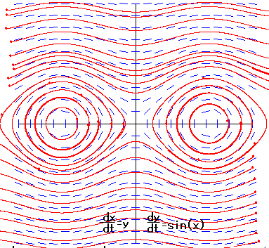
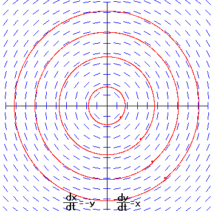
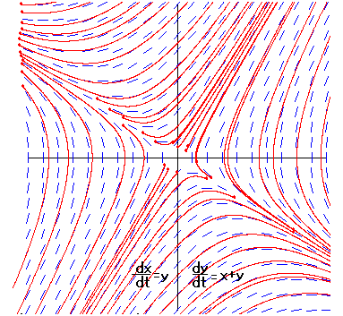

|
Differential Equation (parameter) can be expressed in the form
dx/dt = f(x,y), dy/dt = g(x,y).
The solution of the differential equation are certain functions. The differential equation defines the slope of at the point (x,y) of the certain curve of the function that passes through this point. For each point (x,y), the differential equation defines a line segment with slope (f,g). |
|  |  |
|  |  |